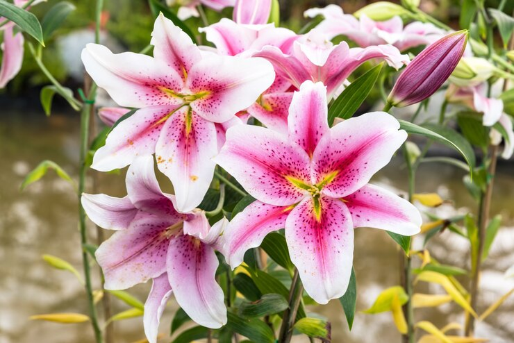

O lírio é uma flor delicada e elegante, conhecida por sua beleza e perfume marcante. A gérbera encanta com suas cores vibrantes e alegres, trazendo vida e energia ao ambiente. Já a tulipa transmite simplicidade e sofisticação, sendo símbolo de amor e renovação. Essas três flores juntas representam a diversidade e a beleza da natureza.
